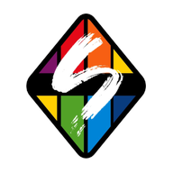

Sanad Order
Sanad Company · Privacy Policy · Last updated 2026-11-27Privacy Policy
Sanad Company respects your privacy. This policy explains what we collect, why, and how we protect it.
1. What we collect
- Account: name, username, phone number, e-mail, city, address and profile photo (if you add one).
- Orders: products, quantities, prices, notes and status.
- What you write: ratings and comments, support messages and challenge participation.
- Device and usage: an anonymous device ID, device type, country and IP address (for statistics and fraud prevention), and a push-notification token.
- We do not collect your precise GPS location, your contacts or bank-card details.
2. How we use it
- To process and deliver your orders and contact you about them.
- To send notifications (order updates, offers, rewards) — you can turn them off in your phone's settings.
- To answer your messages, run rewards and challenges, and show ratings.
- To improve the app with aggregate statistics and to protect accounts against fraud and misuse.
3. Sharing
- We do not sell your data or share it with advertisers.
- Only the providers needed to run the app hold data: Supabase (database and sign-in), Google Firebase (notifications) and GitHub (website hosting).
- Ratings show only your first name and photo — never your phone number or address.
- We disclose data to authorities only when the law requires it.
4. Security and retention
- Data travels over encrypted connections (HTTPS) and each member can only see their own data; only authorised Sanad staff have access.
- We keep your data while your account exists. Deleting your account removes your profile, orders, messages and ratings; only anonymous statistics remain.
- To stop a blocked account from returning, we keep its device, phone number and e-mail, and its IP address for 30 days.
5. Your rights
- You can view and edit your data in Account → Personal information, and delete your account permanently at any time.
- For any other request about your data, e-mail us.
6. Children and changes
- The app is intended for business customers aged 18 and over.
- If we change this policy we will update the "last updated" date and tell you in the app.
Contact
Sanad Company · app@sanadcompany.com · +964 750 841 8593
یاسای تایبەتمەندی
کۆمپانیای ساناد ڕێز لە تایبەتمەندیت دەگرێت. ئەم سیاسەتە ڕوونی دەکاتەوە کە چ زانیارییەک کۆدەکەینەوە، بۆچی، و چۆن دەیپارێزین.
١. چی کۆدەکەینەوە
- زانیاری هەژمار: ناو، ناوی بەکارهێنەر، ژمارەی مۆبایل، ئیمەیڵ، شار، ناونیشان و وێنەی پرۆفایل (ئەگەر دایبنێیت).
- داواکاری: بەرهەم، ژمارە، نرخ، تێبینی و دۆخی داواکارییەکانت.
- ئەوەی خۆت دەینووسیت: هەڵسەنگاندن و تێبینی، نامەکانی هاوکاری، و بەشداری لە چالێنج.
- زانیاری ئامێر و بەکارهێنان: ناسنامەیەکی بێناوی ئامێر، جۆری ئامێر، وڵات و ناونیشانی IP (بۆ ئامار و پاراستن لە فێڵ)، و کۆدی ئاگادارکردنەوە.
- شوێنی وردی GPS، پەیوەندییەکانی مۆبایل و زانیاری کارتی بانکی کۆناکەینەوە.
٢. بۆچی بەکاری دەهێنین
- جێبەجێکردن و گەیاندنی داواکارییەکانت و پەیوەندیکردن پێتەوە دەربارەیان.
- ناردنی ئاگادارکردنەوە (نوێکاری داواکاری، ئۆفەر، خەڵات) — دەتوانیت لە ڕێکخستنی مۆبایلەکەت بیکوژێنیتەوە.
- وەڵامدانەوەی نامەکانت، بەڕێوەبردنی خەڵات و چالێنج، و پیشاندانی هەڵسەنگاندنەکان.
- باشترکردنی ئەپ بە ئاماری گشتی، و پاراستنی هەژمارەکان لە فێڵ و بەکارهێنانی خراپ.
٣. هاوبەشکردن
- زانیارییەکانت نافرۆشین و نایدەین بە کۆمپانیای ڕیکلام.
- تەنها ئەم دابینکەرانە زانیارییەکان هەڵدەگرن بۆ کارکردنی ئەپەکە: Supabase (داتابەیس و چوونەژوورەوە)، Google Firebase (ئاگادارکردنەوە)، و GitHub (هۆستی ماڵپەڕ).
- لە هەڵسەنگاندنەکاندا تەنها ناوی یەکەمت و وێنەکەت پیشان دەدرێت؛ ژمارە و ناونیشانت هەرگیز.
- تەنها ئەگەر یاسا داوای بکات زانیاری دەدەینە دەسەڵاتی پەیوەندیدار.
٤. پاراستن و ماوەی هەڵگرتن
- زانیارییەکان بە پەیوەندیی شفرەکراو (HTTPS) دەنێردرێن، و هەر ئەندامێک تەنها دەتوانێت زانیاری خۆی ببینێت. تەنها کارمەندانی ڕێگەپێدراوی ساناد دەستیان پێی دەگات.
- زانیارییەکانت هەڵدەگیرێن تا هەژمارەکەت هەیە. لە کاتی سڕینەوەی هەژمار، پرۆفایل، داواکاری، نامە و هەڵسەنگاندنەکانت دەسڕدرێنەوە؛ تەنها ئاماری بێناو دەمێنێتەوە.
- بۆ ڕێگرتن لە گەڕانەوەی هەژمارێکی بلۆککراو، ئامێر، ژمارە و ئیمەیڵەکەی هەڵدەگیرێن، و IP ـەکەی بۆ ٣٠ ڕۆژ.
٥. مافەکانت
- دەتوانیت لە هەژمار ← زانیاری تایبەت زانیارییەکانت ببینیت و دەستکاری بکەیت، و هەر کاتێک هەژمارەکەت بە یەکجاری بسڕیتەوە.
- بۆ هەر داواکارییەکی تر دەربارەی زانیارییەکانت، ئیمەیڵمان بۆ بنێرە.
٦. منداڵان و گۆڕانکاری
- ئەپەکە بۆ کڕیارانی بازرگانی و تەمەنی ١٨ ساڵ بەرەوژوورە.
- ئەگەر ئەم سیاسەتە بگۆڕین، بەرواری «دوایین نوێکردنەوە» دەگۆڕین و لە ئەپەکەدا ئاگادارت دەکەینەوە.
پەیوەندی
Sanad Company · app@sanadcompany.com · +964 750 841 8593
سياسة الخصوصية
تحترم شركة ساناد خصوصيتك. توضح هذه السياسة المعلومات التي نجمعها ولماذا وكيف نحميها.
١. ما الذي نجمعه
- معلومات الحساب: الاسم، اسم المستخدم، رقم الهاتف، البريد، المدينة، العنوان وصورة الملف (إن أضفتها).
- الطلبات: المنتجات والكميات والأسعار والملاحظات وحالة الطلب.
- ما تكتبه بنفسك: التقييمات والتعليقات، رسائل الدعم، والمشاركة في التحديات.
- معلومات الجهاز والاستخدام: معرّف مجهول للجهاز، نوع الجهاز، الدولة وعنوان IP (للإحصاءات ومنع الاحتيال)، ورمز الإشعارات.
- لا نجمع موقعك الدقيق (GPS) ولا جهات الاتصال ولا بيانات البطاقات المصرفية.
٢. كيف نستخدمها
- تنفيذ طلباتك وتوصيلها والتواصل معك بشأنها.
- إرسال الإشعارات (تحديثات الطلبات، العروض، المكافآت) — ويمكنك إيقافها من إعدادات هاتفك.
- الرد على رسائلك وإدارة المكافآت والتحديات وعرض التقييمات.
- تحسين التطبيق عبر إحصاءات عامة وحماية الحسابات من الاحتيال وسوء الاستخدام.
٣. المشاركة
- لا نبيع بياناتك ولا نشاركها مع جهات إعلانية.
- يحتفظ بالبيانات فقط مزودو الخدمة اللازمون لتشغيل التطبيق: Supabase (قاعدة البيانات وتسجيل الدخول)، Google Firebase (الإشعارات)، وGitHub (استضافة الموقع).
- في التقييمات يظهر اسمك الأول وصورتك فقط، ولا يظهر رقمك أو عنوانك أبداً.
- لا نقدم بيانات للجهات الرسمية إلا إذا طلب القانون ذلك.
٤. الحماية ومدة الاحتفاظ
- تُنقل البيانات عبر اتصال مشفّر (HTTPS)، ولا يرى كل عضو إلا بياناته. ولا يصل إليها إلا موظفو ساناد المخولون.
- نحتفظ ببياناتك ما دام حسابك قائماً. عند حذف الحساب تُحذف بيانات الملف والطلبات والرسائل والتقييمات، وتبقى إحصاءات مجهولة فقط.
- لمنع عودة حساب محظور، نحتفظ بجهازه ورقمه وبريده، وبعنوان IP لمدة ٣٠ يوماً.
٥. حقوقك
- يمكنك عرض بياناتك وتعديلها من حسابي ← المعلومات الشخصية، وحذف حسابك نهائياً في أي وقت.
- لأي طلب آخر يخص بياناتك، راسلنا عبر البريد.
٦. الأطفال والتعديلات
- التطبيق موجّه للزبائن التجاريين ولمن هم بعمر ١٨ سنة فأكثر.
- عند تعديل هذه السياسة سنحدّث تاريخ «آخر تحديث» ونبلغك داخل التطبيق.
التواصل
Sanad Company · app@sanadcompany.com · +964 750 841 8593
Delete your account · سڕینەوەی هەژمار · حذف الحساب
In the app: Account → Personal information → Delete my account. Your profile, order history and devices are removed permanently. If you cannot sign in, e-mail us.
لە ئەپەکەدا: هەژمار ← زانیاری تایبەت ← سڕینەوەی هەژمارەکەم. پرۆفایل، مێژووی داواکاری و ئامێرەکانت بە یەکجاری دەسڕدرێنەوە. ئەگەر ناتوانیت بچیتە ژوورەوە، ئیمەیڵمان بۆ بنێرە.
داخل التطبيق: حسابي ← المعلومات الشخصية ← حذف حسابي. يُحذف ملفك وسجل طلباتك وأجهزتك نهائياً. إن لم تستطع الدخول راسلنا عبر البريد.